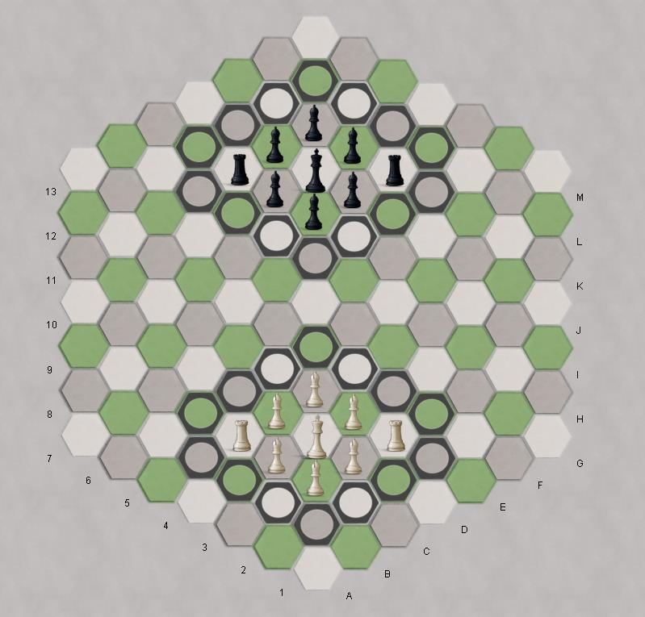

|
Movement
- The king is confined to his 3x3 castle. He can
move one step in any cardinal direction, one step diagonally, or one
step using the knight's move (which is the jump from a sharp corner to
an opposite side or vice versa).
- The rook moves any unobstructed distance in any cardinal direction, unhindered by cells of the walls.
- The bishop moves any unobstructed distance in
any diagonal direction, unhindered by cells of the walls. It always is
bound to the checkered sub-grid it moves on.
- The queen moves any unobstructed distance in
any cardinal or diagonal direction, unhindered by cells of the walls. A
piece becomes a queen the very moment it ends its move inside the
opponent's castle.
|